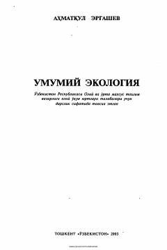

UEOliy o'quv yurtlari talabalari uchun mo'ljallangan ekologiya fanidan fundamental darslik.
Ushbu darslik ekologiyaning ilmiy va nazariy asoslarini qamrab olgan bo'lib, oliy o'quv yurtlari talabalari uchun mo'ljallangan. Kitobda ekologiya tarixi, biosfera ta'limoti, organizmlarning o'zaro munosabatlari hamda zamonaviy ekologik muammolar va ularni hal etish yo'llari batafsil yoritilgan.